データセットの値を使用してデータプロットの色を制御する
プロットの色 - データセット制御
Originのワークシート（または、エクセルのワークブック）にある値の列を使って、同じワークシートやワークブックから作図したデータのプロットの色を編集できます。
- プロットデータの両端にある155列までのうち、どれか1つを、色制御のデータセットとして指定できます。
- 元のワークシート内で、155列より多い列がYのデータセットの右にある場合、Y列を作図した値（この値を含む）から155列までの列が、色制御の列として表示されます。
- ワークシート内で、155列より少ない列がYのデータセットの右にある場合、Yデータセットの左右両方にある列が使用されます。
データセットで色制御を設定するにはデータプロットの要素のカラーボタンを使って行います(例えば、「作図の詳細」ダイアログのシンボルの色のボタン)。
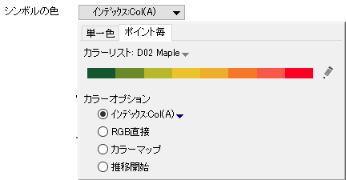
カラーチューザーのポイント毎タブにある方法で、データセットの色の制御ができます。最初の3つの方法は、一般的なグラフタイプで利用可能で、残りは特定のグラフタイプで使用するものです。
- インデックス: このオプションは、整数のデータセットまたは特定の カラーリスト にある色を指定するテキストストリングを使用します。
- RGB直接: このオプションの場合、独立したR,G,Bの値から計算された、RGBの構成値のデータセットを使います。
- カラーマップ: このオプションの場合、ビン化され、かつ、カスタマイズ可能なビン範囲の実数のデータセットが、カスタマイズ可能なカラーリストにマップされます。
- 密度カラーマッピング: 密度ドットテンプレートで使用できます。
- Y値: カラーマップ: 1つのグラフに複数のYデータが存在する時、このオプションではY値とによってカラーマップを設定し、同様のカラーマップレベルを適用します。
- Y値: 正-負-合計: このオプションは、対応するY値が正、負、または合計のどの条件であるかによって、縦棒/横棒を異なる色で塗ります。(滝グラフでのみ利用可能)
インデックス：
このオプションは、整数のデータセットまたは特定のカラーリストにある色を指定する カテゴリー値 を使用します。
このツールを使うには
- 変更したいデータプロットをダブルクリックします。 「作図の詳細」ダイアログボックスが開きます。
- 「シンボル」タブ、「パターン」タブなどを選択します。
- 「シンボルの色」ボタン、「塗り色ボタンなどをクリックします。カラーチューザーが開いたら、「ポイント毎」タブで、インデックス: データセット (データセット色制御のデータを保存している列名）を選択します。
- 適用をクリックします。
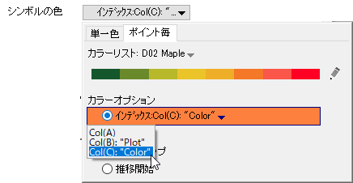
|
Note:インデックスしている列の列フォーマットは、数値、または、文字と数値 列には、整数を含んでいないといけません。カテゴリーデータの場合は、対応するカテゴリ―です。小数点の右の全てがドロップされます。
|
インデックス色を変更するには:
Origin 2019より前のバージョンでは、ワークシートの値のインデックスを作成するには、作図詳細で色リストタブに追加し、カラーリストをそのタブでカラーリストをカスタマイズしました。Origin 2019では、以下のように変更されています。
- 色リストボタンをクリックします (例 シンボル = シンボルの色)
- 鉛筆のアイコンをクリックして、現在の色リストを右にスライドさせます。
- 色リストをロード、修正、保存するに従って作業します。
RGB直接:
RGB色をOriginのグラフに適用するには、RGB合成値を作成する必要があります。RGB合成値は次の値から計算できます。
- 赤(R)、緑(G)、青(B)の3つの要素を含むワークシート列。赤、緑、青の値は、0から255の範囲をとります(例：(255,0,0))。
- HTMLカラーコード値のワークシート列(例：#FF0000)
RGB合成値は以下のように計算できます。
- 値の設定で、color()関数を使って、下の画像のように合成値を計算します(黄色で示したF(x)=行はスプレッドシートセル表記を使用しています)。
- 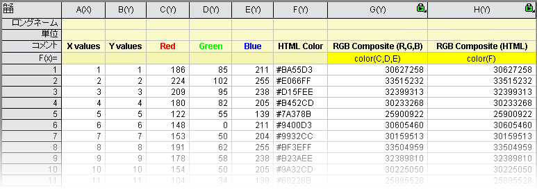
RGB合成値のデータセットが用意できたら、以下のようにします。
- 変更したいデータプロットをダブルクリックします。 「作図の詳細」ダイアログボックスが開きます。
- 「シンボル」タブ、「パターン」タブなどを選択します。
- 色ボタン(境界の色など)をクリックし、ポイント毎タブをクリックしてRGB直接: データセット(RGB合成値が入力されたデータセット)を選択します。
- 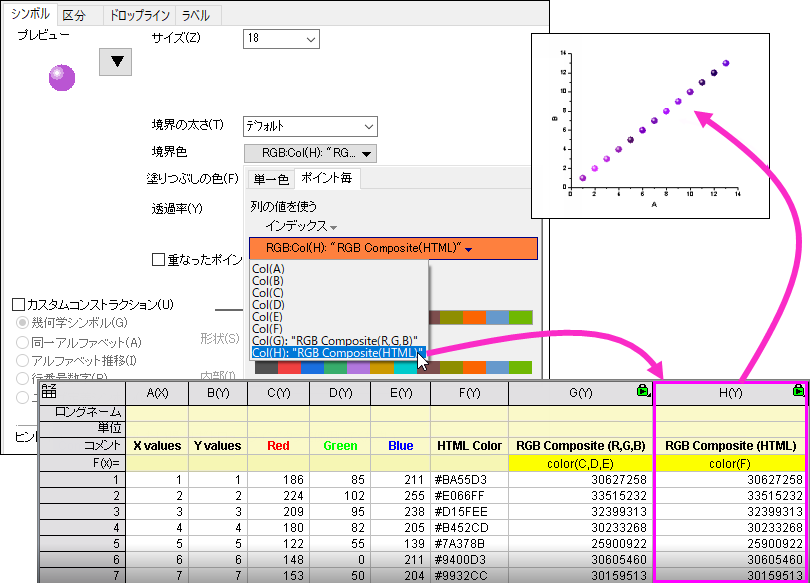
 | スクリプトウィンドウまたはコマンドウィンドウでColor() 関数 を使い、HTMLカラーコードまたはRGBの3つの値からRGB合成値を計算することもできます。
- コマンドウィンドウ(ウィンドウ：コマンドウィンドウ)またはスクリプトウィンドウ(ウィンドウ：スクリプトウィンドウ)を開きます。
- 以下のサンプルの通りに値を入力し、Enterキーを押します。
color(#FF0000)=
color(255,0,0)=
- Originは次のように返します。
color(#FF0000)=
color(255,0,0)=
|
カラーマップ
このオプションでは、2DのY値または3DのZ値と色階調との間にマッピング関係を作成できます。 作成したカラーマップに基づいて、2D Y値や3D Z値がプロットのデータポイント色要素として利用されます。YまたはZは実数です。
- 変更したいデータプロットをダブルクリックします。 「作図の詳細」ダイアログボックスが開きます。
- 「シンボル」タブ、「パターン」タブなどを選択します。
- シンボルの色 ボタン、塗り色 ボタン等を選択し、 カラーマッピング: データセット を選択します。
例:
- 新規プロジェクト、または、新規ワークブックを作成します。「単一ASCIIインポート」ボタンを使って、データファイル 「/Samples/Graphing/Template.dat 」をインポートします。 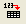
- 列(A)と列（B)を指定して、作図：基本の2Dグラフ：散布図を選択して、グラフを作成します。
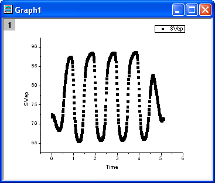
- グラフのデータ上でダブルクリックします。 「作図の詳細」ダイアログボックスが開きます。
- シンボルタブを開きます。
- シンボルの色ボタンをクリックして、ポイント毎タブで、カラーマップ: Col("SVep")を選択します。
- 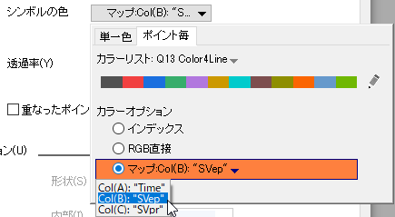
- グラフは下図のようになっています。
- 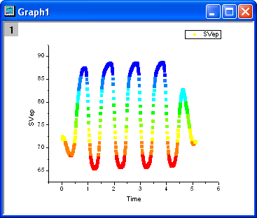
Originは、自動的に8色(とその上下層)の色階調を作成します。さらに、データセットの最高値と最低値が確認され、データセットの値が色階調の色にマッピングされます。その結果8つのレベルになります。
デフォルトのカラーマップをカスタムするには：
- プロットをダブルクリックして、作図の詳細を開き、カラーマップタブを開きます。レベル、または、色塗りの列ヘッダでクリックして、YやZの値の範囲を関連付けた色に指定します。
- 挿入: 色スケールを選択し、カラースケールとグラフに関連付けられたカラーマップを表示します。
| Note: スケールをダブルクリックして、色スケール制御ダイアログボックスを開いて、スケールを変更します。詳細は、色スケールをご覧ください。
|
カラーマップオプションは、2つの従属変数と1つの独立変数からなるデータを表現するときに、特に効果を発揮します。 この場合、従属変数を独立変数の一方に対して作図し、もう1つの独立変数をデータプロットのカラーマップに使用します。 例えば、あるサンプルからの反応を様々な位置や温度に応じて計測するとします。カラーマップオプションを使わない場合、2レイヤグラフを用いて温度と、観測された反応の変化を表すことになります。 カラーマップオプションを利用すると、観測された反応と対応する位置、温度をカラーマップとしてプロットすることができます。
Y値: カラーマップ
このオプションは2Dグループプロットの内部編集モードでのみ有効です。Y値: カラーマップ: 1つのグラフに複数のYデータが存在する時、このオプションではY値とによってカラーマップを設定し、同様のカラーマップレベルを適用します。
例:
- 新規プロジェクト、または、新規ワークブックを作成します。「単一ASCIIインポート」ボタンを使って、データファイル \Samples\Curve Fitting\Composite Spectrum.dat をインポートします。
- すべての列をハイライトして、作図: 2D: 複数Y軸: Yオフセット付き積上げ折れ線を選択して作図します。
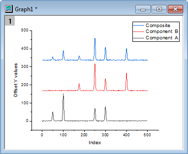
- メニューから、フォーマット：作図の詳細（プロット属性）を選択し、作図の詳細ダイアログボックスを開きます。
- グラフの線タブを開きます。
- 色ボタンをクリックして、ポイント毎タブで、Y値：カラーマップを選択します。
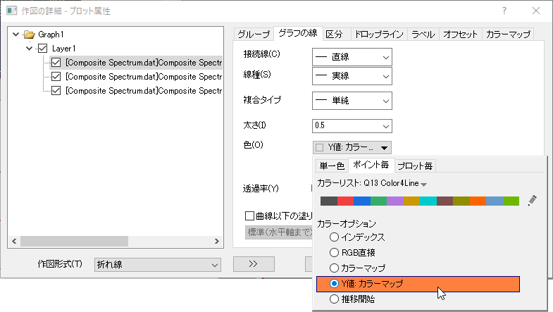
- カラーマップタブを開きます。カラーマップを下図のようにセットします。
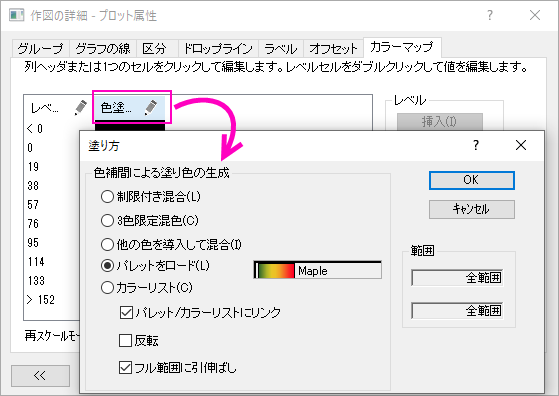
- 最後に、グラフに色スケールを追加したい場合、グラフにオブジェクトを追加ツールバーのカラースケールボタンをクリックします。
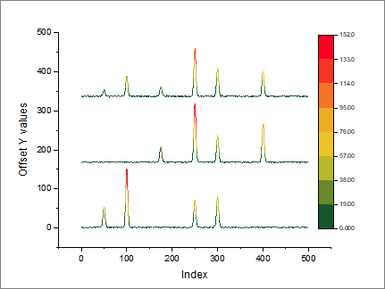
| カラーマッププロットに対して色スケールはデフォルトの凡例が適用されていますが、プロットに独立したカラースケールを追加することができます。詳しくは、独立したカラースケールの追加.を参照してください。
|
Y値: 正-負-合計
このオプションは、滝グラフでのみ使用できます（マッキンゼースタイルのウォータフォールとも呼ばれます）。滝グラフは、作図の詳細（レイヤ属性）の滝グラフタブで、滝グラフを有効にするを選択した棒グラフです。
このオプションは、作図の詳細ダイアログのパターンタブの塗り色/パターン色ドロップダウンリストにあります。対応するY値が正、負、または合計のどの条件であるかによって、縦棒/横棒を異なる色で塗ります。滝グラフタブの合計/小計のデータインデックスで合計を設定できます。
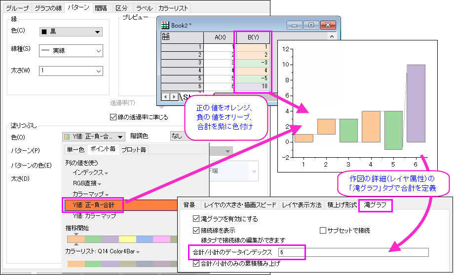
塗りつぶしのカラーシーケンスは、カラーリストの下部に表示されます。Y値: 正-負-合計オプションでは、最初の3つの色だけが使用されます。1番目の色は正のY、2番目の色は負のY、3番目の色は合計に割り当てられます。
Ctrlキーを押しながらカラーリストをクリックして、推移リストエディタを開き、色を修正できます。